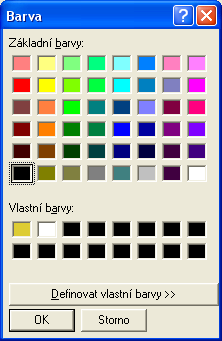
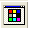

Z programov Word, Excel a ïalších poznáme postup ako zvoli� farbu. Tu si uká�eme ako tento spôsob vo¾by
farby pre u�ívate¾a nauèi� aj náš program.
ColorDialog
Toto dialógové okno pou�ijeme, ak chceme aby si u�ívate¾ mohol zvoli� farbu, ktorú potom mo�no aplikova�
na niektorú vlastnos� vlo�eného objektu. Tento dialóg ale farbu nikomu nezmení-nenastavuje, len umo�ní nám
postupom be�nım vo Win navoli� si farbu. Dialógové okno ColorDialog nájdeme na karte Dialogs,
vlo�íme ho do nášho formulára. Ide o nevizuálny objekt a tak umiestnenie v okne nemá vplyv na pou�itie.
Po vlo�ení do formulára získame funkciu ColorDialog1.execute, ktorá vytvorí dialógové okno na vo¾bu farby.
V object inspector (alebo príkazmi) mo�no pred zavolaním okna nastavi� nejaké vlastnosti
CustomColor - urèíme si vlastné farby
Formát zadania vlastnıch farieb treba presne dodr�a� a zada� v samostanıch riuadkoch bez medzier v tvare:
ColorX=hexa_farba
kde X mô�e by� A a� P
príklad:
ColorA=c0c0c0
ColorB=33ccdd
Execute
- základná funkcia objektu, ktorá vytvorí na obrazovke okno cez ktoré bude
komunikova� s u�ívate¾om.

V tomto okne si zvolíme z ponúkanıch základnıch farieb alebo si vytvoríme vlastnú farbu.
OK a Storno.
Funkcia nadobúda logickú hodnotu TRUE - ak u�ívate¾ stlaèí OK a FALSE ak stlaèí Storno alebo okno len zavrie.
Ak stlaèíme OK farba sa zapíše do ColorDialog1.Color
ColorDialog.Color
- je typu Tcolor, a mo�no ho priradi� do vlastnosti Color nejakého iného objektu.
Pou�itie
Tu si uká�eme ako pou�i� ColorDialog napr. pri vo¾be pozadia Mema na obrazovke
Vytvoríme nasledovnı formulár.
Form1

Program na obsluhu tlaèídka by mohol by� nasledovnı:
Unit1.pas
void __fastcall TForm1::Button1Click(TObject *Sender)
{
if (ColorDialog1.Execute) Memo1->Color = ColorDialog1->Color;
else ShowMessage("Vo¾ba farby bola zrušená u�ívate¾om");
}